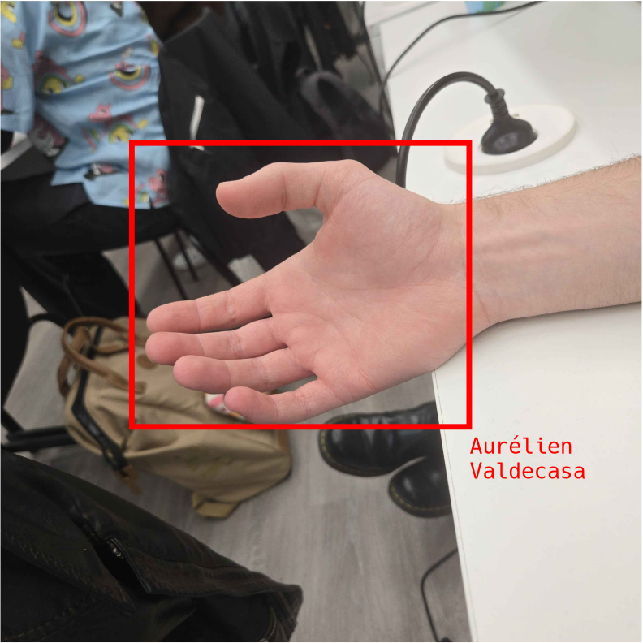

Reconnaître une personne grâce à sa main
Je voudrais montrer qu’avec des moyens relativement modestes (ceux d’un étudiant en licence), il est possible de mettre en œuvre la reconnaissance d’identité à partir de la main. Ma motivation première est de sensibiliser aux dangers de la vision par ordinateur et d’encourager à la protection des données personnelles. En effet, si avec des ressources limitées on peut identifier une personne masquée grâce à sa main, une organisation disposant de moyens bien plus importants, pourrait le faire à grande échelle.
Par ailleurs, la reconnaissance faciale, par l’iris ou par l’empreinte digitale, a déjà fait l’objet de nombreux travaux, tandis que la reconnaissance de la main reste moins étudiée. Pourtant, les informations fournies par une image de main sont très riches et les implications éthiques particulièrement fortes. Aujourd’hui, son étude demeure en grande partie confinée au milieu académique, et l’on trouve peu de codes ou de jeux de données accessibles au grand public, surtout pour des environnements non contrôlés. J’aimerais donc contribuer à ce domaine en le rendant plus ouvert.
Mon objectif est donc de construire un modèle de reconnaissance d'image pour pouvoir importer la photo d’une main et déterminer si elle correspond à une personne présente dans mon jeu de données.

Plus d'informations et animation explicative